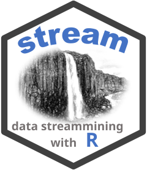

Abstract Class for Macro Clusterers (Offline Component)
Source:R/DSC_Macro.R
DSC_Macro.RdAbstract class for all DSC Macro Clusterers which recluster micro-clusters offline into final clusters called macro-clusters.
Details
Data stream clustering algorithms typically consist of an online component
that creates micro-clusters (implemented as DSC_Micro) and
offline components which are used to recluster micro-clusters into
final clusters called macro-clusters.
The function recluster() is used to extract micro-clusters from a DSC_Micro and
create macro-clusters with a DSC_Macro.
Available clustering methods can be found in the See Also section below.
microToMacro() returns the assignment of Micro-cluster IDs to Macro-cluster IDs.
For convenience, a DSC_Micro and DSC_Macro can be combined using DSC_TwoStage.
DSC_Macro cannot be instantiated.
See also
Other DSC_Macro:
DSC_DBSCAN(),
DSC_EA(),
DSC_Hierarchical(),
DSC_Kmeans(),
DSC_Reachability(),
DSC_SlidingWindow()
Other DSC:
DSC(),
DSC_Micro(),
DSC_R(),
DSC_SlidingWindow(),
DSC_Static(),
DSC_TwoStage(),
animate_cluster(),
evaluate.DSC,
get_assignment(),
plot.DSC(),
predict,
prune_clusters(),
read_saveDSC,
recluster()